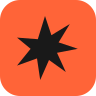
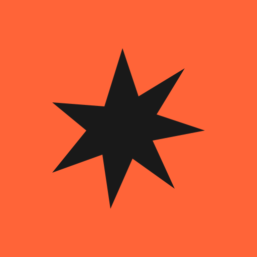

A spark with a point of view.
Original vector lettering. A compact, asymmetrical spark. Designed to feel confident on a publisher deck and playful on a game screen.
01 / Reversed · one colour
02 / Wordmark alone
03 / Favicon & small-size checks

16px24px
32px
48px
80px
Iskra Games — Small spark. Big play.
04 / Avatar & game splash mark

Built to travel.
The spark works without the name in tabs, avatars and game credits. The full lockup introduces the studio clearly. Custom path-based lettering stays identical on every device and needs no font download.
Playful, with structure.
The wordmark’s angular cuts echo the spark. Orange carries the energy; charcoal anchors it; warm paper gives the page room to breathe. Acid yellow is reserved for small moments of emphasis.
IGNITION / #FF6438
INK / #191919
PAPER / #F1EEE5
FLASH / #D3FF55
Design proposal, not an approved identity. Small-size renders and single-colour treatments are shown above.